3 Cálculo y Optimización
Conceptos Básicos
3.1 Derivada
Supongamos que tenemos una función en una variable f : \mathbb{R} → \mathbb{R}.
La derivada de f en un punto x \in \mathbb{R} es:
- La razón de cambio de de f entorno a x
cambio = \frac{f(x+h)-f(x)}{h} (en este caso h < 0)
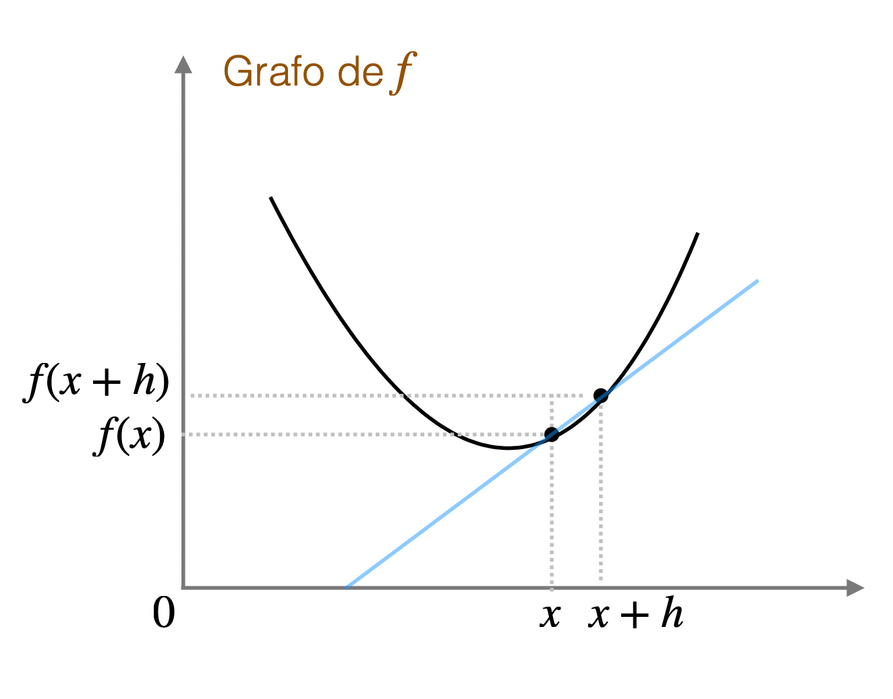
Formalmente:
f'(x)= \lim_{h \to 0}\frac{f(x+h)-f(x)}{h}
Pendiente de la recta tangente al grafo de f en el punto f(x)
La derivada nos da la mejor aproximación lineal de f entorno a x
f(x + h) ≈ f(x) + f'(x)h
Observaciones:
- La derivada f'(x) no siempre existe
- Si existe decimos que f es derivable en x
- Si f es derivable en x, entonces es continua en x
- Si f es derivable en todo x \in \mathbb{R}, decimos que f es derivable
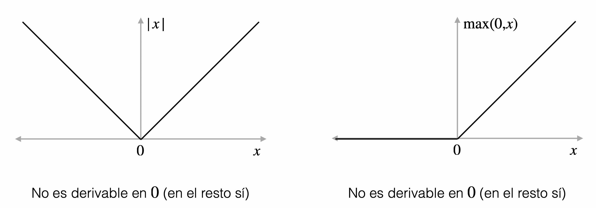
3.1.1 Derivada: ejemplos y reglas de cálculo
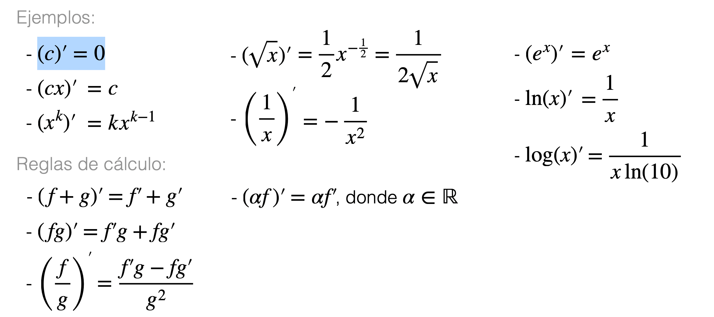
Regla de la cadena: Si f(x) = h(g(x)) entonces f'(x) = h'(g(x)) \cdot g'(x)
Ejemplo 1:
(2ln(x^3)+e^x x^2+7)'
2\frac{1}{x^3}3x^2+e^x x^2+e^x2x \frac{6x^2}{x^3}+e^x x^2+2^x x \frac{6x}{x}+e^x x^2+2^x x
Ejemplo 2:
f(x)= (5x^4-6x^3+x)^5
f'(x)= 5(5x^4-6x^3+x)^4 \cdot (20x^3-18x^2+1)
f'(x)= (5x^4-6x^3+x)^4 \cdot (100x^3-90x^2+5)
3.1.2 Derivadas: caso varias variables
Ahora tenemos una función f : \mathbb{R}^n \to \mathbb{R} con n variables ¿ Cómo definimos la derivada entorno a \bar{x}\in \mathbb{R}^n ? Igual que antes pero necesitamos fijar una dirección para movernos
- La dirección estará dada por un vector \bar{v} \in \mathbb{R}^n (y la recta que define)
Definimos la derivada direccional de f entorno a \bar{x} en dirección \bar{v} como:
\nabla f'(\bar{x})= \lim_{h \to 0}\frac{f(\bar{x}+h\bar{v})-f(\bar{x})}{h}
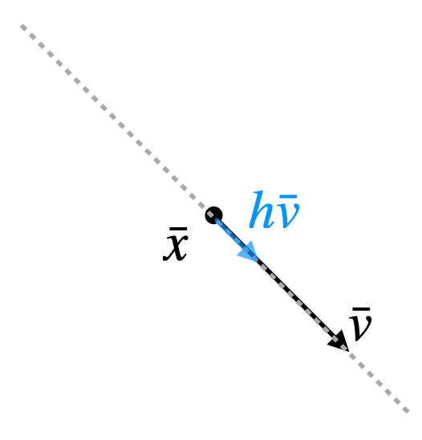
3.1.3 Derivadas parciales
- Definición General:
-
Una derivada parcial de una función de varia variables es su derivada respecto a una de esas variables con las otras mandeniéndose constantes. Las derivadas parciales son útiles en el cálculo vectorial y geometría diferencial.
Ejemplo:
f(x, y)=3x^2+5xy-7y^2+1 \frac{\partial f}{\partial x}=6x+5y \cdot 1-0+0
\frac{\partial f}{\partial x}=6x+5y Las y se tratan como constantes y al derivarlas es cero.
La derivada parcial respecto a y
\frac{\partial f}{\partial y}=0+5x \cdot 1+7\cdot 2y+0 \frac{\partial f}{\partial y}=5x+14y
Si f : \mathbb{R}^n \to \mathbb{R} está dada por n variables, definimos la derivada parcial de f entorno a \bar{x} = (x_1, ..., x_n) con respecto a la variables x_i como la derivada direccional con dirección el vector canónico \bar{e}_i
De manera equivalente, podemos definir la derivada parcial como:
\frac{\partial f}{\partial x_i}(x_1, ..., x_n)= \lim_{h \to 0} \frac{f(x_1, ..., x_i+h, ...,x_n)-f(x_1,...,x_i, ..., x_n)}{h}
Definimos el gradiente como \nabla f : \mathbb{R}^n \to \mathbb{R}^n
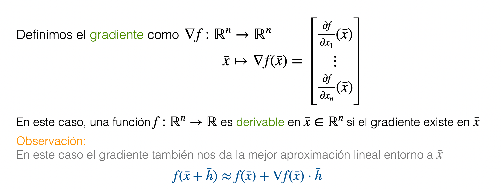
Ejercicios:
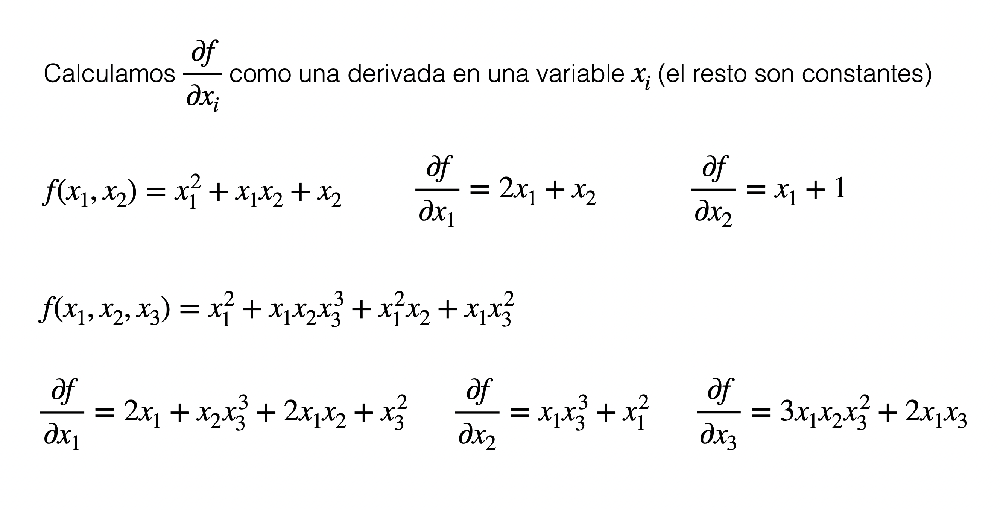
3.2 Gradiente: Propiedades
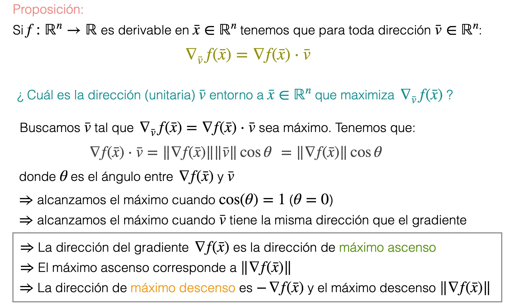
- \nabla: Derivada Direccional
Se pretende encontrar la dirección con la derivada direccional
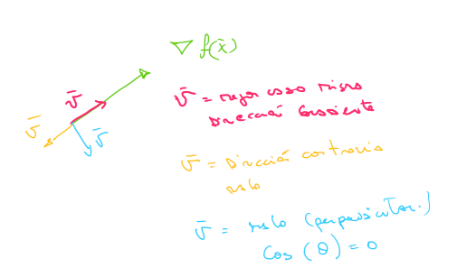
3.2.1 Hessiano (matriz)
En matemática, la matriz hessiana de una función escalar o campo escalar f de n variables, es la matriz cuadrada de tamaño n \times n, de las segundas derivadas parciales. (wikipedia)
Aplicación de la matriz hessiana:
- Concavidad/Convexidad
- Método para determinar el carácter de los puntos críticos (máximos, mínimos y puntos de inflexión o silla o de ensilladura)
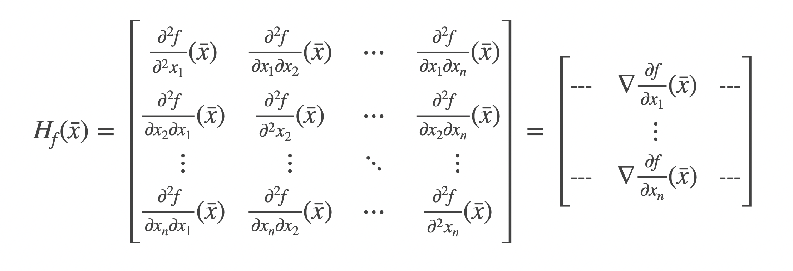
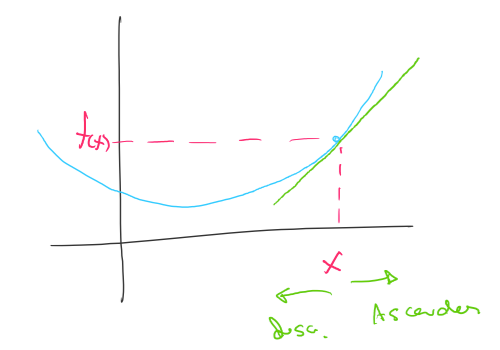
Referencias: khanacademy: Hessiano
3.2.2 Derivada: varias variables a varias variables
Sea f : R^n \to R^m una función dada por las funciones coordenadas f = (f_1,..., f_m), para funciones f_i : R^n \to R
Definimos el Jacobiano de f entorno a \bar{x} como la matriz de m \times n:
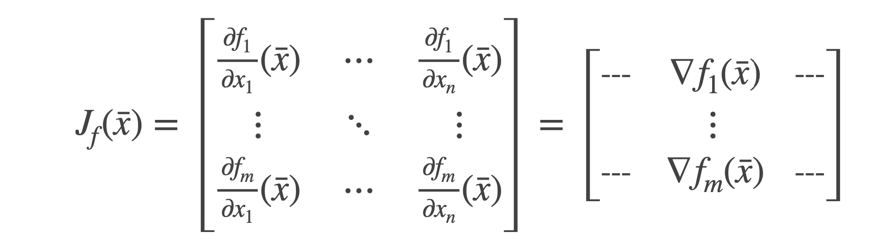
- Observación:
-
Nuevamente el Jacobiano nos da la mejor aproximación lineal entorno a \bar{x}
f ( \bar{x} + \bar{h}) \approx f ( \bar{x}) + J_f ( \bar{x} ) \bar{h}
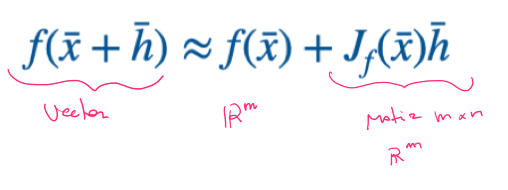
- Observación:
-
El Hessiano de una función f : \mathbb{R}^n \to \mathbb{R} es el Jacobiano del gradiente \nabla f
- Jacobiano:
-
En cálculo vectorial, la matriz Jacobiana de una función vectorial de varias variables es la matriz cuyos elementos son las derivadas parciales de primer orden de dicha función. Wikipedia
Referencias: khanacademy: Jacobiano
Ejercicios
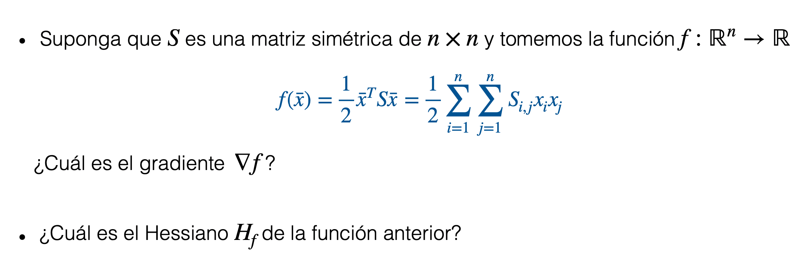
3.3 Puntos Estacionarios
Supongamos que f : \mathbb{R} \to \mathbb{R} es derivable. Decimos que x \in \mathbb{R} es un punto estacionario si f'(x) = 0. Un punto estacionario puede ser:
- Maximizador global
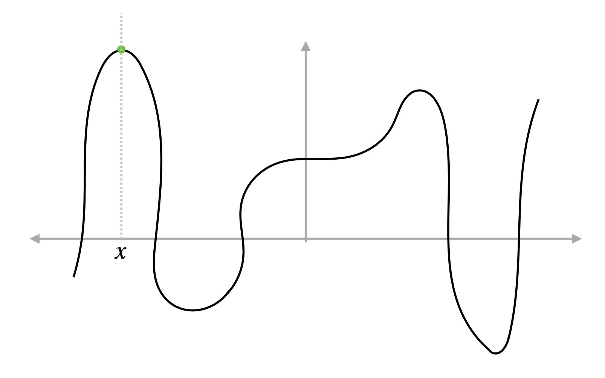
- Maximizador local
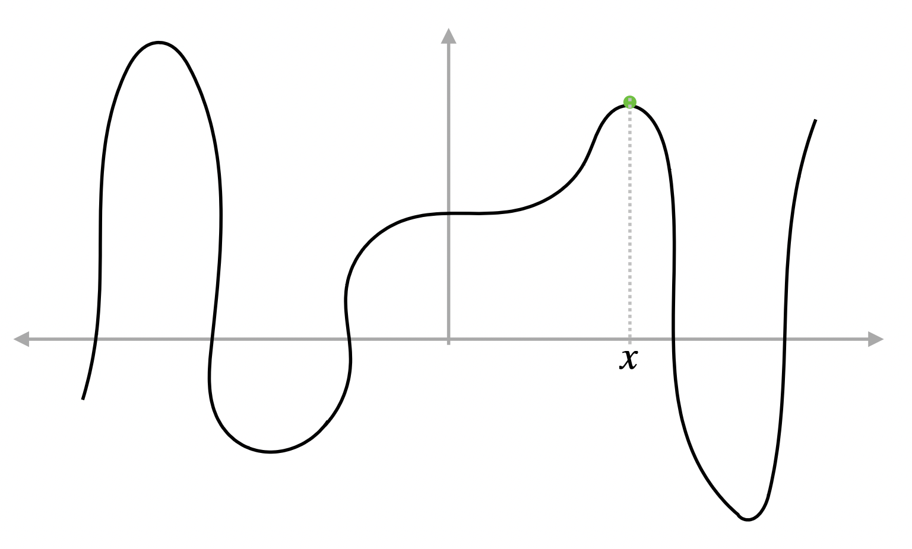
- Minimizador global
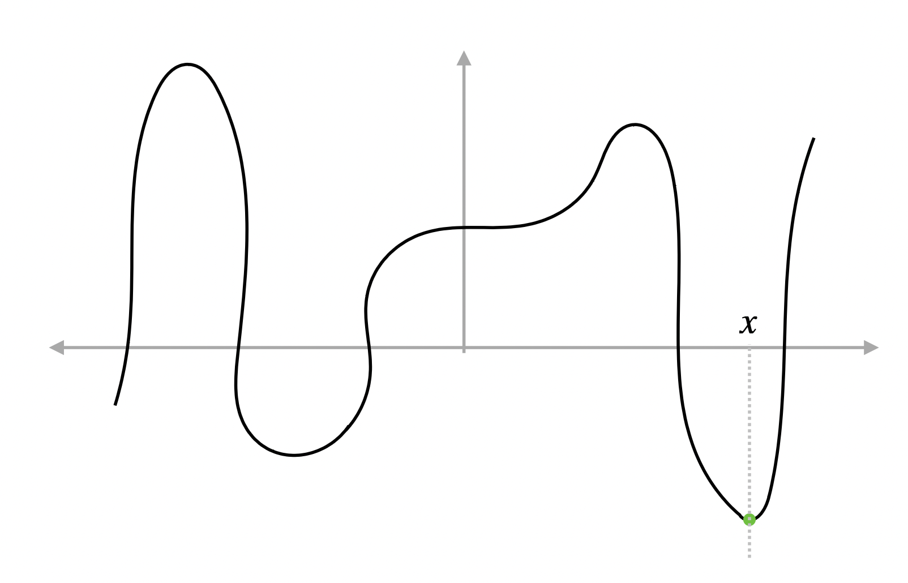
- Minimizador local
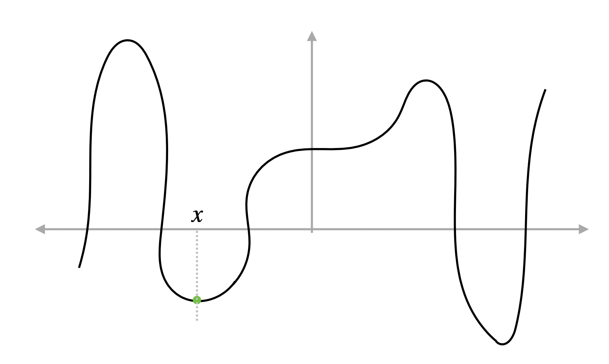
- Punto Silla
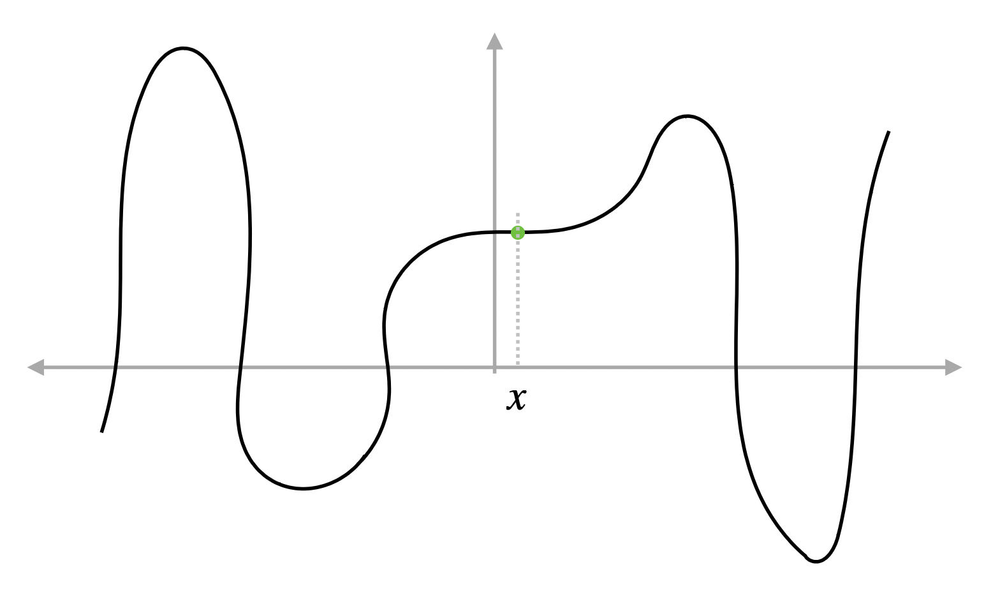
Podemos diferenciar entre un maximizador y un minimizador con f':
Si f′ cambia de signo en x de + a - \to x es maximizador (local o global)
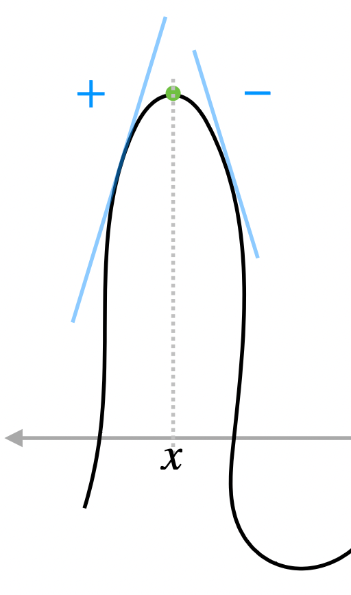
Si f′ cambia de signo en x de - a + \to x es minimizador (local o global)
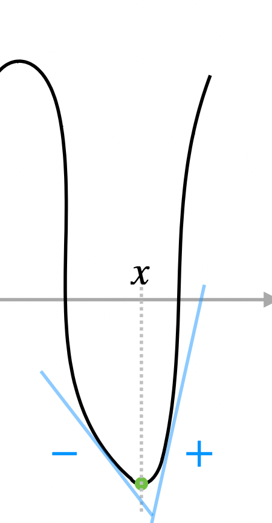
Podemos diferenciar entre un maximizador y un minimizador usando la segunda derivada f''(x) si existe:
$f′′(x) < 0 ⇒ x $ es maximizador (local o global)
$f′′(x) > 0 ⇒ x $ es minimizador (local o global)
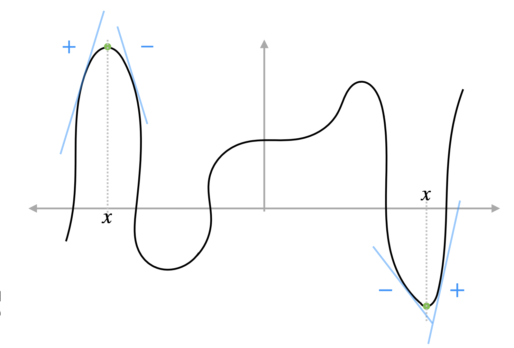
Ejercicios
¿Qué pasa con f′′(x) para el caso de punto silla?
R: Si
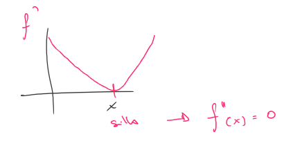
¿Es cierto que si f′′(x) = 0 entonces el punto estacionario es silla?
R: No siempre
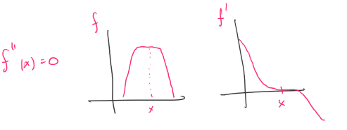
3.4 Convexidad y concavidad
Decimos que una función f : \mathbb{R} \to \mathbb{R} es convexa si para todo x, y \in \mathbb{R} y a \in (0,1)
f(ax + (1 − a)y) ≤ af(x) + (1 − a)f(y)
f es estrictamente convexa si la desigualdad anterior es estricta <
$f$ es cóncava si se cumple lo de arriba pero con ≥ en vez de ≤,
y es estrictamente cóncava si se cumple con >
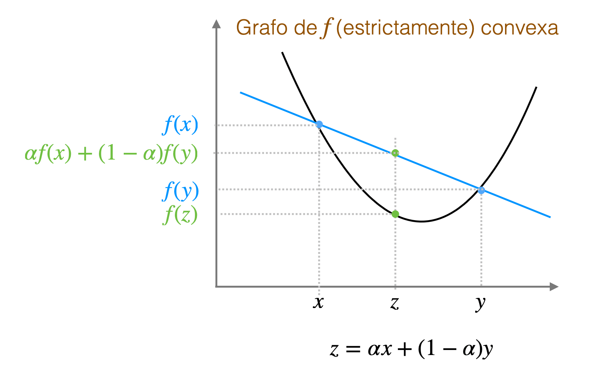
Ejemplo: - Toda función lineal f(x) = cx + d es convexa y cóncava (se cumple la desigualdad con =) - f(x) = x^2 es estrictamente convexa
Observaciones (análogo para concavidad):
Si f tiene segunda derivada f′′ entonces f es convexa ⇔ f'' ≥ 0
Si f tiene derivada f′ y es convexa entonces
f′(x) = 0 ⇔ x es un minimizador global para f
Si f es además estrictamente convexa entonces hay un único minimizador (el cual es global)
Ejercicios
- Suponga f1 y f2 son funciones convexas de \mathbb{R} a \mathbb{R}, ¿es cierto que la función min{f1, f2} es convexa?
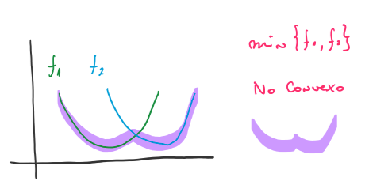
- ¿Es cierto que la función max{f1, f2} es convexa?
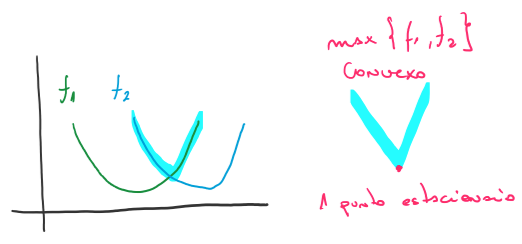
Puntos estacionarios de $f : $^n \mathbb{R}
Como en el caso de una variable, tenemos puntos estacionarios donde
\nabla f(\bar{x})= \bar{0}
Los puntos estacionarios pueden ser minimizadores/maximizadores locales/globales o puntos sillas…
3.4.1 Convexidad: caso varias variables
Podemos definir convexidad igual que antes:
Decimos que una función f : \mathbb{R} \to \mathbb{R} es convexa si para todo x, y \in \mathbb{R} y a \in (0,1)
f(ax + (1 − a)y) ≤ af(x) + (1 − a)f(y)
f es estrictamente convexa si la desigualdad anterior es estricta <
$f$ es cóncava si se cumple lo de arriba pero con ≥ en vez de ≤,
y es estrictamente cóncava si se cumple con >
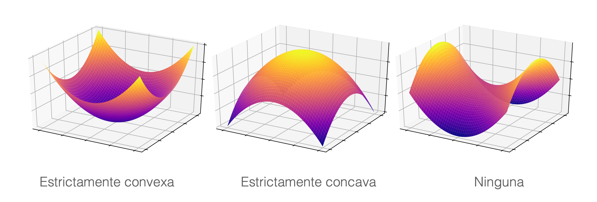
Seguimos teniendo las buenas propiedades que antes:
Si f : \mathbb{R}^n \to \mathbb{R} tiene el Hessiano bien definido entonces: Hf es semidefinida positiva ⇔ f es convexa
Si f : \mathbb{R}^n \to \mathbb{R}es derivable en \bar{x} y convexa entonces \nabla f(\bar{x}) = \bar{0} ⇔ \bar{x} \in R^n es un minimizador global para f
Si f además es estrictamente convexa, existe un único minimizador (el cual es global)
- Recordar:
- Una matriz simétrica A de n × n es semidefinida positiva si
\bar{x}^T A\bar{x} ≥ 0 \ \forall\ \bar{x} \in R^n
- Ojo:
- el Hessiano (si existe) siempre es una matriz simétrica
Ejemplo: cuadrados mínimos
Sea A una matriz de n × m y \bar{b} \in R^n
Problema de cuadrados mínimos: Buscar \bar{x} \in \mathbb{R}^m tal que ∥A\bar{x} −\bar{b}∥^2 sea mínimo
Observación: La función n ∥A\bar{x} −\bar{b}∥^2 es convexa
f: \mathbb{R}^m \to \mathbb{R}
\bar{x} \to ||A\bar{x}-\bar{b}||^2=(A_{1,*}\cdot\bar{x}-b_1+..., A_{n,*}\cdot\bar{x}-b_n)^2
\frac{\partial f}{\partial x_i}= 2(A_{1,*}\cdot\bar{x}-b_1)A_{1, i}+...+2(A_{n,*}\cdot\bar{x}-b_n)A_{n, i}
= 2(A\bar{x}-\bar{b})\cdot A_{*,i}
\nabla f= 2A^T(A\bar{x}-\bar{b})
La ecuación \nabla f(\bar{x})=\bar{0} nos da:
2A^T (A\bar{x}-\bar{b})=\bar{0} \to A^T A\bar{x}=A^T\bar{b}
Si 2A^T es invertible es convexa